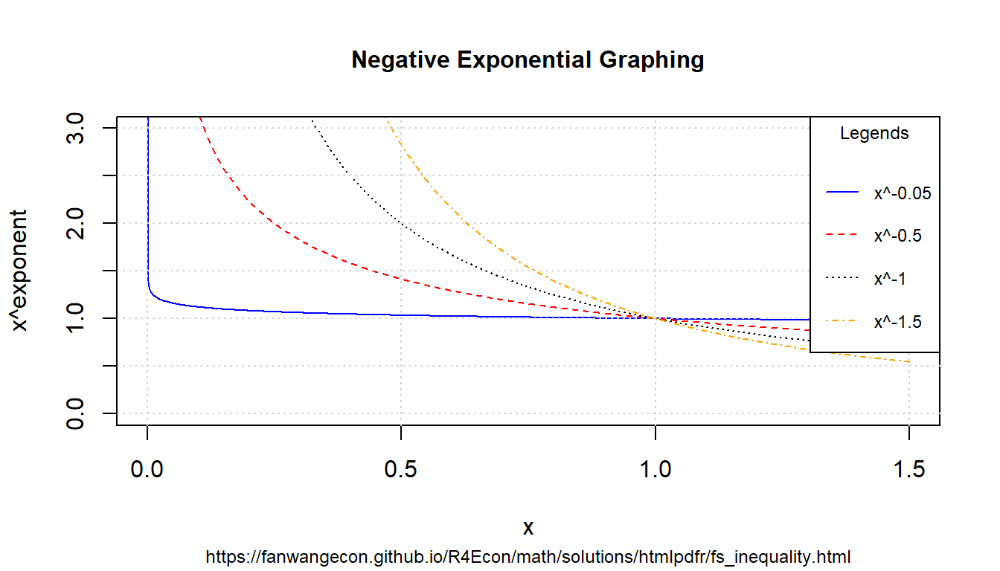
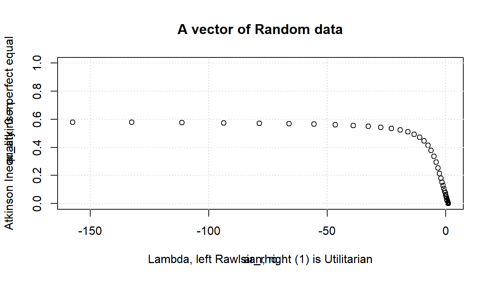
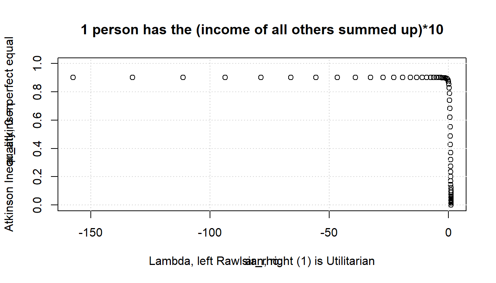
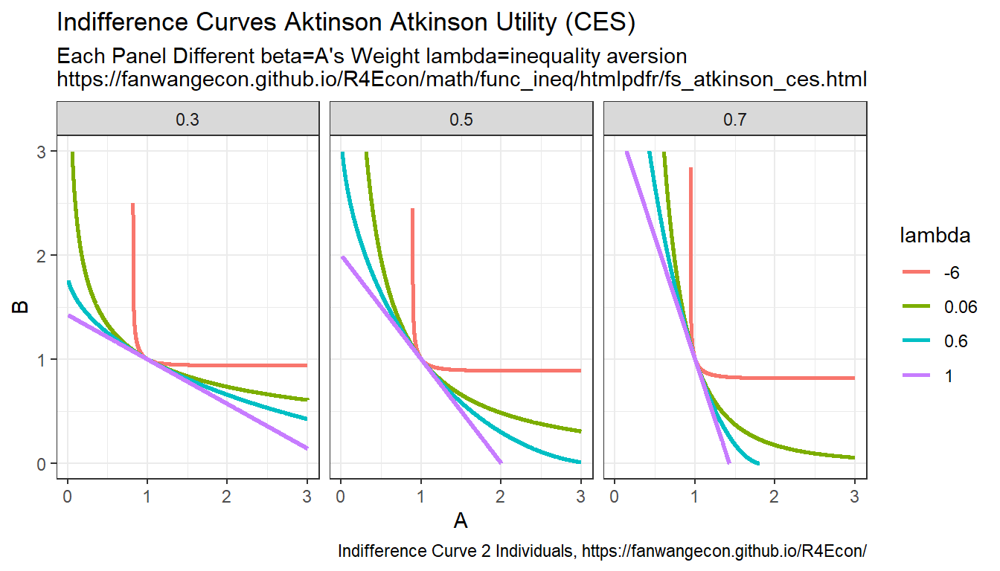
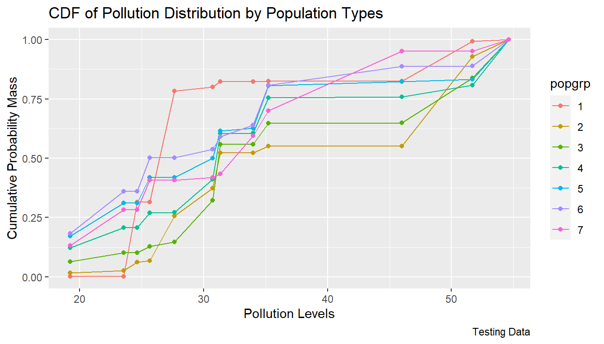
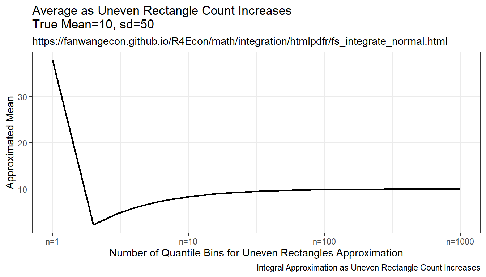

Chapter 8 Mathematics
8.1 Basics
8.1.1 Rescale a Parameter with Fixed Min and Max
Go back to fan’s REconTools Package, R Code Examples Repository (bookdown site), or Intro Stats with R Repository (bookdown site).
8.1.1.1 Using A Quadratic Function to Fit Three Points Uniquely
Given e < x < f, use f(x) to rescale x, such that f(e)=e, f(f)=f, but f(z)=\(\alpha \cdot z\) for one particular z between e and f, where \(\alpha\) > 1. And in this case, assume that \(\alpha \cdot z < f\). We can fit these three points using the Quadratic function uniquely. In another word, there is a unique quadratic function that crosses these three points. Note the quadratic function is either concave or convex through the entire domain.
Suppose that \(e=0\), \(f=10\), \(z=2\), and \(\alpha=1.5\). Using a quadratic to fit:
\[ y(x) = a \cdot x^2 + b \cdot x + c \] We have three equations: \[ 0 = a \cdot 0 + b \cdot 0 + c\\ 2 \cdot 1.5 = a \cdot 2^2 + b \cdot 2 + c\\ 10 = a \cdot 10^2 + b \cdot 10 + c \] Given these, we have, \(c = 0\), and subsequently, 2 equations and 2 unknowns: \[ 3 = a \cdot 4 + b \cdot 2\\ 10 = a \cdot 100 + b \cdot 10 \]
Hence: \[ a = \frac{3-2b}{4}\\ 10 = \frac{3-2b}{4}\cdot 100 + b \cdot 10\\ 10 = 75 - 50b + 10b\\ \] And finally: \[ a = \frac{3-2*1.625}{4}=-0.0625\\ b = \frac{65}{40}=1.625\\ c = 0 \]
Generate the \(a\), \(b\) and \(c\) points above for the quadratic function:
# set values
e <- 0
f <- 10
z <- 2
alpha <- 1.5
# apply formulas from above
a <- -0.0625
b <- 1.625
c <- 0
# grid of values beween a and b, 11 points covering z = 2
ar_x <- seq(e, f, length.out = 11)
# rescale
ar_grid_quad <- a*ar_x^2 + b*ar_x + c
# show values
kable(print(as_tibble(cbind(ar_x, ar_grid_quad))),
caption = paste0("Quadratic Fit of Three Equations and Three Unknowns\n",
"Satisfies: f(0)=0, f(10)=10, f(2)=3")) %>%
kable_styling_fc()| ar_x | ar_grid_quad |
|---|---|
| 0 | 0.0000 |
| 1 | 1.5625 |
| 2 | 3.0000 |
| 3 | 4.3125 |
| 4 | 5.5000 |
| 5 | 6.5625 |
| 6 | 7.5000 |
| 7 | 8.3125 |
| 8 | 9.0000 |
| 9 | 9.5625 |
| 10 | 10.0000 |
We have three equations: \[ 0 = a \cdot 0 + b \cdot 0 + c\\ 0.75 = a \cdot 0.5^2 + b \cdot 0.5 + c\\ 3.5 = a \cdot 3.5^2 + b \cdot 3.5 + c \] Given these, we have, \(c = 0\), and subsequently, 2 equations and 2 unknowns: \[ 0.75 = a \cdot 0.25 + b \cdot 0.5\\ 3.5 = a \cdot 12.25 + b \cdot 3.5 \]
Hence: \[ a = \frac{0.75-0.5b}{0.25}\\ 3.5 = \frac{0.75-0.5b}{0.25}\cdot 12.25 + b \cdot 3.5\\ 3.5 = 36.75 - 24.5b + 3.5b\\ \] And finally: \[ a = \frac{0.75-0.5*1.58333}{0.25}=-0.1666\\ b = \frac{36.75-3.5}{24.5-3.5}=1.58333\\ c = 0 \] Generate the \(a\), \(b\) and \(c\) points above for the quadratic function:
# set values
e <- 0
f <- 3.5
z <- 0.5
alpha <- 1.5
# apply formulas from above
a <- -0.16666666
b <- 1.583333333
c <- 0
# grid of values beween a and b, 11 points covering z = 2
ar_x <- seq(e, f, length.out = 100000)
# rescale
ar_grid_quad <- a*ar_x^2 + b*ar_x + c
# show values
# cbind(ar_x, ar_grid_quad)
ar_x[which.min(abs(ar_grid_quad - 0.75))]## [1] 0.5000158.1.2 Positive and Negative Exponents
Go back to fan’s REconTools Package, R Code Examples Repository (bookdown site), or Intro Stats with R Repository (bookdown site).
8.1.2.1 Positive Exponents
Define exponents to consider and x-values to consider.
# positive value exponents
ar_exponents_posv <- c(0.05, 0.5, 1, 1.5)
# positive and negative values of the base
ar_baseval_pos <- seq(1e-10, 1.5, length.out=1000)
# base to power
mt_x2a_val <- matrix(data=NA, nrow=length(ar_exponents_posv), ncol=length(ar_baseval_pos))
# Generate values
it_row_ctr <- 0
for (fl_exponents_posv in ar_exponents_posv) {
it_row_ctr <- it_row_ctr + 1
mt_x2a_val[it_row_ctr,] <- ar_baseval_pos^fl_exponents_posv
}Note that the smaller exponents functions are higher when \(x<1\), but lower when \(x>1\). \[\text{if } b > a > 0 \text{, then, } \left(x^a - x^b\right) > 0 \text{, for all } 1 > x >0\] \[\text{if } b > a > 0 \text{, then, } \left(x^a - x^b\right) < 0 \text{, for all } x > 1\] Note we also have: \(\lim_{a\rightarrow 0} x^a = 1\) and \(\lim_{a\rightarrow 1} x^a = x\) bounds. When \(a>1\), function becomes convex.
# x and bounds
ar_xlim = c(min(ar_baseval_pos), max(ar_baseval_pos))
ar_ylim = c(0, 1.5)
# function line
st_line_1_y_legend <- paste0('x^', ar_exponents_posv[1])
st_line_2_y_legend <- paste0('x^', ar_exponents_posv[2])
st_line_3_y_legend <- paste0('x^', ar_exponents_posv[3])
st_line_4_y_legend <- paste0('x^', ar_exponents_posv[4])
# Color and line
st_point_1_pch <- 10
st_point_1_cex <- 2
ar_colors <- c('blue', 'red', 'black', 'orange')
ar_ltys <- c('solid', 'dashed', 'dotted', 'dotdash')
# Graph and combine
for (it_graph in c(1,2,3,4)) {
if (it_graph != 1) {
par(new=T)
}
ar_y_current <- mt_x2a_val[it_graph, ]
plot(ar_baseval_pos, ar_y_current, type="l",
col = ar_colors[it_graph], lty = ar_ltys[it_graph],
pch = 10, cex = 2, xlim = ar_xlim, ylim = ar_ylim, panel.first = grid(),
ylab = '', xlab = '', yaxt='n', xaxt='n', ann=FALSE)
plot_line <- recordPlot()
}
# CEX sizing Contorl Titling and Legend Sizes
fl_ces_fig_reg = 1
fl_ces_fig_small = 0.75
# R Legend
st_title <- paste0('Positive Exponential Graphing')
st_subtitle <- paste0('https://fanwangecon.github.io/',
'R4Econ/math/solutions/htmlpdfr/fs_inequality.html')
st_x_label <- 'x'
st_y_label <- 'x^exponent'
title(main = st_title, sub = st_subtitle, xlab = st_x_label, ylab = st_y_label,
cex.lab=fl_ces_fig_reg,
cex.main=fl_ces_fig_reg,
cex.sub=fl_ces_fig_small)
axis(1, cex.axis=fl_ces_fig_reg)
axis(2, cex.axis=fl_ces_fig_reg)
grid()
# Legend sizing CEX
legend("bottomright",
inset=c(0,0),
xpd=TRUE,
c(st_line_1_y_legend, st_line_2_y_legend, st_line_3_y_legend, st_line_4_y_legend),
col = c(ar_colors[1], ar_colors[2], ar_colors[3], ar_colors[4]),
cex = fl_ces_fig_small,
lty = c(ar_ltys[1], ar_ltys[2], ar_ltys[3], ar_ltys[4]),
title = 'Legends',
y.intersp=2)8.1.2.2 Negative Exponents
Similar to above, but now with negative exonents.
# positive value exponents
ar_exponents_posv <- -c(0.05, 0.5, 1, 1.5)
# positive and negative values of the base
ar_baseval_pos <- seq(1e-10, 1.5, length.out=1000)
# base to power
mt_x2a_val <- matrix(data=NA, nrow=length(ar_exponents_posv), ncol=length(ar_baseval_pos))
# Generate values
it_row_ctr <- 0
for (fl_exponents_posv in ar_exponents_posv) {
it_row_ctr <- it_row_ctr + 1
mt_x2a_val[it_row_ctr,] <- ar_baseval_pos^fl_exponents_posv
}For positive exponents, when \(x<1\), \(x^a<1\), when \(x>1\), \(x^a>1\). For negative exponents, when \(x<1\), \(x^a>1\), and when \(x>1\), \(x^a<1\). Large positive exponents generate small values when \(x<1\), and large negative exponents generate very large values when \(x<1\).
# x and bounds
ar_xlim = c(min(ar_baseval_pos), max(ar_baseval_pos))
ar_ylim = c(0, 3)
# function line
st_line_1_y_legend <- paste0('x^', ar_exponents_posv[1])
st_line_2_y_legend <- paste0('x^', ar_exponents_posv[2])
st_line_3_y_legend <- paste0('x^', ar_exponents_posv[3])
st_line_4_y_legend <- paste0('x^', ar_exponents_posv[4])
# Color and line
st_point_1_pch <- 10
st_point_1_cex <- 2
ar_colors <- c('blue', 'red', 'black', 'orange')
ar_ltys <- c('solid', 'dashed', 'dotted', 'dotdash')
# Graph and combine
for (it_graph in c(1,2,3,4)) {
if (it_graph != 1) {
par(new=T)
}
ar_y_current <- mt_x2a_val[it_graph, ]
plot(ar_baseval_pos, ar_y_current, type="l",
col = ar_colors[it_graph], lty = ar_ltys[it_graph],
pch = 10, cex = 2, xlim = ar_xlim, ylim = ar_ylim, panel.first = grid(),
ylab = '', xlab = '', yaxt='n', xaxt='n', ann=FALSE)
plot_line <- recordPlot()
}
# CEX sizing Contorl Titling and Legend Sizes
fl_ces_fig_reg = 1
fl_ces_fig_small = 0.75
# R Legend
st_title <- paste0('Negative Exponential Graphing')
st_subtitle <- paste0('https://fanwangecon.github.io/',
'R4Econ/math/solutions/htmlpdfr/fs_inequality.html')
st_x_label <- 'x'
st_y_label <- 'x^exponent'
title(main = st_title, sub = st_subtitle, xlab = st_x_label, ylab = st_y_label,
cex.lab=fl_ces_fig_reg,
cex.main=fl_ces_fig_reg,
cex.sub=fl_ces_fig_small)
axis(1, cex.axis=fl_ces_fig_reg)
axis(2, cex.axis=fl_ces_fig_reg)
grid()
# Legend sizing CEX
legend("topright",
inset=c(0,0),
xpd=TRUE,
c(st_line_1_y_legend, st_line_2_y_legend, st_line_3_y_legend, st_line_4_y_legend),
col = c(ar_colors[1], ar_colors[2], ar_colors[3], ar_colors[4]),
cex = fl_ces_fig_small,
lty = c(ar_ltys[1], ar_ltys[2], ar_ltys[3], ar_ltys[4]),
title = 'Legends',
y.intersp=2)
8.1.2.3 Inequality and Exponents
Suppose we have the inequality \(0 < a < b\), if we apply positive exponents to them, the direction of the inequality will stay the same: If \(0 < a < b\), then \(0 < a^{ \mid \alpha\mid} < b^{ \mid \alpha\mid}\) if \(\alpha < 0\). Think about the graphs above, think of \(a\) and \(b\) as points along the x-axis, note that positive exponents are strictly increasing (although some concavely and some convexly) along the x-axis. Comparing \(x^\alpha\) at \(0<b<a\) anywhere along the x-axis has still has \(b^\alpha<a^\alpha\).
In contrast, if \(0 < a < b\), then \(a^{- \mid \alpha\mid} > b^{- \mid \alpha\mid} > 0\) if \(\alpha < 0\). Sign flips. Visually from above, the sign-flipping happens because negative exponential is strictly decreasing along \(x>0\).
8.1.3 Linear Scalar f(x)=0 Solutions
Go back to fan’s REconTools Package, R Code Examples Repository (bookdown site), or Intro Stats with R Repository (bookdown site).
8.1.3.1 Ratio
Here are some common ratios.
8.1.3.1.1 Unif Draw Min and Max Ratio
We want to draw numbers such that we have some mean \(b\), and that the possible maximum and minimum value drawn are at most \(a\) times apart. Given \(b\) and \(a\), solve for \(x\).
\[ f(x) = \frac{b+x}{b-x} - a = 0 \]
\[ b \cdot a - x \cdot a = b + x \\ b \cdot a - b = x + x \cdot a \\ b \left(a - 1\right) = x \left( a+ 1\right) \\ x = \frac{b\left(a-1\right)}{a+1}\\ \]
Uniformly draw
b <- 100
a <- 2
x <- (b*(a-1))/(a+1)
ar_unif_draws <- runif(100, min=b-x, max=b+x)
fl_max_min_ratio <- max(ar_unif_draws)/min(ar_unif_draws)
cat('fl_max_min_ratio =', fl_max_min_ratio, 'is close to a =', a, '\n')## fl_max_min_ratio = 1.998871 is close to a = 28.2 Inequality Models
8.2.1 Gini Discrete Sample
Go back to fan’s REconTools Package, R Code Examples Repository (bookdown site), or Intro Stats with R Repository (bookdown site).
This works out how the ff_dist_gini_vector_pos function works from Fan’s REconTools Package.
8.2.1.1 Gini Formula for Discrete Sample
There is an vector values (all positive). This could be height information for N individuals. It could also be income information for N individuals. Calculate the GINI coefficient treating the given vector as population. This is not an estimation exercise where we want to estimate population gini based on a sample. The given array is the population. The population is discrete, and only has these N individuals in the length n vector.
Note that when the sample size is small, there is a limit to inequality using the formula defined below given each \(N\). So for small \(N\), can not really compare inequality across arrays with different \(N\), can only compare arrays with the same \(N\).
The GINI formula used here is: \[ GINI = 1 - \frac{2}{N+1} \cdot \left(\sum_{i=1}^N \sum_{j=1}^{i} x_j\right) \cdot \left( \sum_{i=1}^N x_i \right)^{-1} \]
Derive the formula in the steps below.
Step 1 Area Formula
\[ \Gamma = \sum_{i=1}^N \frac{1}{N} \cdot \left( \sum_{j=1}^{i} \left( \frac{x_j}{\sum_{\widehat{j}=1}^N x_{\widehat{j}} } \right) \right) \]
Step 2 Total Area Given Perfect equality
With perfect equality \(x_i=a\) for all \(i\), so need to divide by that.
\[ \Gamma^{\text{equal}} = \sum_{i=1}^N \frac{1}{N} \cdot \left( \sum_{j=1}^{i} \left( \frac{a}{\sum_{\widehat{j}=1}^N a } \right) \right) = \frac{N+1}{N}\cdot\frac{1}{2} \]
As the number of elements of the vecotr increases: \[ \lim_{N \rightarrow \infty}\Gamma^{\text{equal}} = \lim_{N \rightarrow \infty} \frac{N+1}{N}\cdot\frac{1}{2} = \frac{1}{2} \]
Step 3 Arriving at Finite Vector Gini Formula
Given what we have from above, we obtain the gini formula, divide by total area below 45 degree line.
\[ GINI = 1 - \left(\sum_{i=1}^N \sum_{j=1}^{i} x_j\right) \cdot \left( N \cdot \sum_{i=1}^N x_i \right)^{-1} \cdot \left( \frac{N+1}{N}\cdot\frac{1}{2} \right)^{-1} = 1 - \frac{2}{N+1} \cdot \left(\sum_{i=1}^N \sum_{j=1}^{i} x_j\right) \cdot \left( \sum_{i=1}^N x_i \right)^{-1} \]
Step 4 Maximum Inequality given N
Suppose \(x_i=0\) for all \(i<N\), then:
\[ GINI^{x_i = 0 \text{ except } i=N} = 1 - \frac{2}{N+1} \cdot X_N \cdot \left( X_N \right)^{-1} = 1 - \frac{2}{N+1} \]
\[ \lim_{N \rightarrow \infty} GINI^{x_i = 0 \text{ except } i=N} = 1 - \lim_{N \rightarrow \infty} \frac{2}{N+1} = 1 \]
Note that for small N, for example if \(N=10\), even when one person holds all income, all others have 0 income, the formula will not produce gini is zero, but that gini is equal to \(\frac{2}{11}\approx 0.1818\). If \(N=2\), inequality is at most, \(\frac{2}{3}\approx 0.667\).
\[ MostUnequalGINI\left(N\right) = 1 - \frac{2}{N+1} = \frac{N-1}{N+1} \]
8.2.1.1.1 Implement GINI Formula for Discrete Sample
The GINI formula just derived is trivial to compute.
- scalar: \(\frac{2}{N+1}\)
- cumsum: \(\sum_{j=1}^{i} x_j\)
- sum of cumsum: \(\left(\sum_{i=1}^N \sum_{j=1}^{i} x_j\right)\)
- sum: \(\sum_{i=1}^N X_i\)
There are no package dependencies. Define the formula here:
# Formula, directly implement the GINI formula Following Step 4 above
ffi_dist_gini_vector_pos_test <- function(ar_pos) {
# Check length and given warning
it_n <- length(ar_pos)
if (it_n <= 100) warning('Data vector has n=',it_n,', max-inequality/max-gini=',(it_n-1)/(it_n + 1))
# Sort
ar_pos <- sort(ar_pos)
# formula implement
fl_gini <- 1 - ((2/(it_n+1)) * sum(cumsum(ar_pos))*(sum(ar_pos))^(-1))
return(fl_gini)
}Generate a number of examples Arrays for testing
# Example Arrays of data
ar_equal_n1 = c(1)
ar_ineql_n1 = c(100)
ar_equal_n2 = c(1,1)
ar_ineql_alittle_n2 = c(1,2)
ar_ineql_somewht_n2 = c(1,2^3)
ar_ineql_alotine_n2 = c(1,2^5)
ar_ineql_veryvry_n2 = c(1,2^8)
ar_ineql_mostmst_n2 = c(1,2^13)
ar_equal_n10 = c(2,2,2,2,2,2, 2, 2, 2, 2)
ar_ineql_some_n10 = c(1,2,3,5,8,13,21,34,55,89)
ar_ineql_very_n10 = c(1,2^2,3^2,5^2,8^2,13^2,21^2,34^2,55^2,89^2)
ar_ineql_extr_n10 = c(1,2^2,3^3,5^4,8^5,13^6,21^7,34^8,55^9,89^10)Now test the example arrays above using the function based no our formula:
##
## Small N=1 Hard-Code## ar_equal_n1: 0## ar_ineql_n1: 0##
## Small N=2 Hard-Code, converge to 1/3, see formula above## ar_ineql_alittle_n2: 0.1111111## ar_ineql_somewht_n2: 0.2592593## ar_ineql_alotine_n2: 0.3131313## ar_ineql_veryvry_n2: 0.3307393##
## Small N=10 Hard-Code, convege to 9/11=0.8181, see formula above## ar_equal_n10: 0## ar_ineql_some_n10: 0.5395514## ar_ineql_very_n10: 0.7059554## ar_ineql_extr_n10: 0.81815498.2.2 Gini Formula for Discrete Random Varialbe
For a discrete random variable, we are two arrays, an array of \(x\) values, and an array of \(f(x)\) probability mass at each \(x\) value. Suppose the \(x\) values are unique/non-repeating. This is also Implemented in MEconTools with the ff_disc_rand_var_gini function.
Generate two arrays for \(x\) and \(f(x)\), we will use the binomial distribution:
ar_choice_unique_sorted <- seq(0, 100, by=1)
ar_choice_prob <- dbinom(ar_choice_unique_sorted, 100, 0.01)Generate mean and cumulative mean at each point:
# 1. to normalize, get mean (binomial so mean is p*N=50)
fl_mean <- sum(ar_choice_unique_sorted*ar_choice_prob);
# 2. get cumulative mean at each point
ar_mean_cumsum <- cumsum(ar_choice_unique_sorted*ar_choice_prob);Normalizing and area calculation, following the same principle as above:
# 3. Share of wealth (income etc) accounted for up to this sorted type
ar_height <- ar_mean_cumsum/fl_mean;
# 4. The total area, is the each height times each width summed up
fl_area_drm <- sum(ar_choice_prob*ar_height);Finally GINI coefficient:
# 5. area below 45 degree line might not be 1/2, depends on discretness
fl_area_below45 <- sum(ar_choice_prob*(cumsum(ar_choice_prob)/sum(ar_choice_prob)))
# 6. Gini is the distance between
fl_gini_index <- (fl_area_below45-fl_area_drm)/fl_area_below45
print(paste0('fl_gini_index=', fl_gini_index))## [1] "fl_gini_index=0.468573066002754"8.2.2.1 Discrete Random Variable as Function
Organizing the code above as a function, and testing results out with the binomial distribution as an example.
For the binomial distribution, if the probability of success is very close to zero, that means nearly all mass is at lose all or nearly losing all. There will be non-zero but very small mass at higher levels of wins. Hence this should mean extreme inequality. GINI index should be close to 1. Alternatively, GINI index should be close to 0 when we have near 100 percent chance of success, then all mass is at winning all, perfect equality.
# Combining the code from above
ffi_dist_gini_random_var_pos_test <- function(ar_x_sorted, ar_prob_of_x) {
# Check length and given warning
# 1. to normalize, get mean (binomial so mean is p*N=50)
fl_mean <- sum(ar_x_sorted*ar_prob_of_x);
# 2. get cumulative mean at each point
ar_mean_cumsum <- cumsum(ar_x_sorted*ar_prob_of_x);
# 3. Share of wealth (income etc) accounted for up to this sorted type
ar_height <- ar_mean_cumsum/fl_mean;
# 4. The total area, is the each height times each width summed up
fl_area_drm <- sum(ar_prob_of_x*ar_height);
# 5. area below 45 degree line might not be 1/2, depends on discretness
fl_area_below45 <- sum(ar_prob_of_x*(cumsum(ar_prob_of_x)/sum(ar_prob_of_x)))
# 6. Gini is the distance between
fl_gini_index <- (fl_area_below45-fl_area_drm)/fl_area_below45
return(fl_gini_index)
}Testing the function with the Binomial Distribution:
for (fl_binom_success_prob in seq(0.0001,0.9999,length.out=10)) {
ar_x_sorted <- seq(0, 100, by=1)
ar_prob_of_x <- dbinom(ar_x_sorted, 100, fl_binom_success_prob)
fl_gini_index <- ffi_dist_gini_random_var_pos_test(ar_x_sorted, ar_prob_of_x)
st_print <- paste0('binom p(success)=', fl_binom_success_prob ,
', the fl_gini_index=', fl_gini_index)
print(st_print)
}## [1] "binom p(success)=1e-04, the fl_gini_index=0.990048846889393"
## [1] "binom p(success)=0.111188888888889, the fl_gini_index=0.147061101509638"
## [1] "binom p(success)=0.222277777777778, the fl_gini_index=0.0989942681255604"
## [1] "binom p(success)=0.333366666666667, the fl_gini_index=0.0753059593394789"
## [1] "binom p(success)=0.444455555555556, the fl_gini_index=0.0596495299535176"
## [1] "binom p(success)=0.555544444444444, the fl_gini_index=0.0476678493269222"
## [1] "binom p(success)=0.666633333333333, the fl_gini_index=0.0375168214334586"
## [1] "binom p(success)=0.777722222222222, the fl_gini_index=0.0280646430085938"
## [1] "binom p(success)=0.888811111111111, the fl_gini_index=0.0180312757603542"
## [1] "binom p(success)=0.9999, the fl_gini_index=9.90197372312816e-07"8.2.2.2 Compare Discrete Sample and Discrete Random Variable Functions for GINI
ff_dist_gini_random_var provides the GINI implementation for a discrete random variable. The procedure is the same as prior, except now each element of the “x” array has element specific weights associated with it. The function can handle unsorted array with non-unique values.
Test and compare ff_dist_gini_random_var provides the GINI implementation for a discrete random variable and ff_dist_gini_vector_pos.
There is a vector of values from 1 to 100, in ascending order. What is the equal-weighted gini, the gini result when smaller numbers have higher weights, and when larger numbers have higher weights?
First, generate the relevant values.
# array
ar_x <- seq(1, 100, length.out = 30)
# prob array
ar_prob_x_unif <- rep.int(1, length(ar_x))/sum(rep.int(1, length(ar_x)))
# prob higher at lower values
ar_prob_x_lowval_highwgt <- rev(cumsum(ar_prob_x_unif))/sum(cumsum(ar_prob_x_unif))
# prob higher at lower values
ar_prob_x_highval_highwgt <- (cumsum(ar_prob_x_unif))/sum(cumsum(ar_prob_x_unif))
# show
kable(cbind(ar_x, ar_prob_x_unif, ar_prob_x_lowval_highwgt, ar_prob_x_highval_highwgt)) %>%
kable_styling_fc()| ar_x | ar_prob_x_unif | ar_prob_x_lowval_highwgt | ar_prob_x_highval_highwgt |
|---|---|---|---|
| 1.000000 | 0.0333333 | 0.0645161 | 0.0021505 |
| 4.413793 | 0.0333333 | 0.0623656 | 0.0043011 |
| 7.827586 | 0.0333333 | 0.0602151 | 0.0064516 |
| 11.241379 | 0.0333333 | 0.0580645 | 0.0086022 |
| 14.655172 | 0.0333333 | 0.0559140 | 0.0107527 |
| 18.068966 | 0.0333333 | 0.0537634 | 0.0129032 |
| 21.482759 | 0.0333333 | 0.0516129 | 0.0150538 |
| 24.896552 | 0.0333333 | 0.0494624 | 0.0172043 |
| 28.310345 | 0.0333333 | 0.0473118 | 0.0193548 |
| 31.724138 | 0.0333333 | 0.0451613 | 0.0215054 |
| 35.137931 | 0.0333333 | 0.0430108 | 0.0236559 |
| 38.551724 | 0.0333333 | 0.0408602 | 0.0258065 |
| 41.965517 | 0.0333333 | 0.0387097 | 0.0279570 |
| 45.379310 | 0.0333333 | 0.0365591 | 0.0301075 |
| 48.793103 | 0.0333333 | 0.0344086 | 0.0322581 |
| 52.206897 | 0.0333333 | 0.0322581 | 0.0344086 |
| 55.620690 | 0.0333333 | 0.0301075 | 0.0365591 |
| 59.034483 | 0.0333333 | 0.0279570 | 0.0387097 |
| 62.448276 | 0.0333333 | 0.0258065 | 0.0408602 |
| 65.862069 | 0.0333333 | 0.0236559 | 0.0430108 |
| 69.275862 | 0.0333333 | 0.0215054 | 0.0451613 |
| 72.689655 | 0.0333333 | 0.0193548 | 0.0473118 |
| 76.103448 | 0.0333333 | 0.0172043 | 0.0494624 |
| 79.517241 | 0.0333333 | 0.0150538 | 0.0516129 |
| 82.931034 | 0.0333333 | 0.0129032 | 0.0537634 |
| 86.344828 | 0.0333333 | 0.0107527 | 0.0559140 |
| 89.758621 | 0.0333333 | 0.0086022 | 0.0580645 |
| 93.172414 | 0.0333333 | 0.0064516 | 0.0602151 |
| 96.586207 | 0.0333333 | 0.0043011 | 0.0623656 |
| 100.000000 | 0.0333333 | 0.0021505 | 0.0645161 |
Second, generate GINI values. What should happen?
- The ff_dist_gini_random_var and ff_dist_gini_vector_pos results should be the same when the uniform distribution is used.
- GINI should be higher, more inequality, if there is higher weights on the lower values.
- GINI should be lower, more equality, if there is higher weight on the higher values.
ff_dist_gini_vector_pos(ar_x)## [1] 0.3267327ff_dist_gini_random_var(ar_x, ar_prob_x_unif)## [1] 0.3267327ff_dist_gini_random_var(ar_x, ar_prob_x_lowval_highwgt)## [1] 0.4010343ff_dist_gini_random_var(ar_x, ar_prob_x_highval_highwgt)## [1] 0.19268498.2.3 Atkinson Inequality Index
Go back to fan’s REconTools Package, R Code Examples Repository (bookdown site), or Intro Stats with R Repository (bookdown site).
8.2.3.1 Atkinson Inequality Measures
Atkinson (JET, 1970) studies five standard inequality measures. Atkinson finds that given the same income data across countries, different inequality measure lead to different rankings of which country is more unequal. Atkinson develops an measure of inequality that changes depending on an inequality aversion parameter.
\[ \text{Atkinson Inequality} = A\left( \left\{Y_i\right\}_{i=1}^N, \lambda \right) = 1 - \left( \sum_{i=1}^N \frac{1}{N} \left( \frac{Y_i}{\sum_{j=1}^N \left( \frac{Y_j}{N} \right) } \right)^{\lambda} \right)^{\frac{1}{\lambda}} \in \left[0,1\right] \]
\(A\left(\left\{Y_i\right\}_{i=1}^N,\lambda\right)\) equals to zero is perfect equality. 1 is Perfect inequality. If \(\lambda=1\), the inequality measure is always equal to 0 because the planner does not care abouot inequality anymore.
8.2.3.2 Atkinson Inequality Function
Programming up the equation above, we have:
# Formula
ffi_atkinson_ineq <- function(ar_data, fl_rho) {
ar_data_demean <- ar_data/mean(ar_data)
it_len <- length(ar_data_demean)
fl_atkinson <- 1 - sum(ar_data_demean^{fl_rho}*(1/it_len))^(1/fl_rho)
return(fl_atkinson)
}8.2.3.3 Atkinson Inequality Examples
Given a vectr of observables, compute the atkinson inequality measure given different inequality aversion.
Preference vector and data vector:
# Preference Vector
ar_rho <- c(1, 1 - (10^(c(seq(-2.2,2.2, length.out=60)))))
ar_rho <- unique(ar_rho)
mt_rho <- matrix(ar_rho, nrow=length(ar_rho), ncol=1)
# Random Data Vector (not equal outcomes)
set.seed(123)
ar_data_rand <- rnorm(15, mean=0,sd=1)
ar_data_rand <- ar_data_rand - min(ar_data_rand) + 1
# Uniform Data Vector (Equal)
ar_data_unif <- rep(1, length(ar_data_rand))
# One Rich (last person has income equal to the sum of all others*100)
ar_data_onerich <- rep(0.1, length(ar_data_rand))
ar_data_onerich[length(ar_data_onerich)] = sum(head(ar_data_onerich,-1))*10Testing Atkinson with different data arrays:
# ATK = 0.1180513
ffi_atkinson_ineq(ar_data_rand, -1)## [1] 0.1180513# ATK = 0
ffi_atkinson_ineq(ar_data_unif, -1)## [1] 0# ATK = 0.89
ffi_atkinson_ineq(ar_data_onerich, -1)## [1] 0.89569338.2.3.3.1 Atkinson Inequality as Inequality Aversion Changes
This is the vector of inequality aversion parameters:
ar_rho## [1] 1.00000000 0.99369043 0.99250837 0.99110487 0.98943842 0.98745978 0.98511046 0.98232100 0.97900896 0.97507643
## [11] 0.97040717 0.96486316 0.95828051 0.95046465 0.94118454 0.93016586 0.91708291 0.90154895 0.88310482 0.86120530
## [21] 0.83520306 0.80432947 0.76767192 0.72414684 0.67246762 0.61110666 0.53825013 0.45174443 0.34903248 0.22707813
## [31] 0.08227648 -0.08965279 -0.29379184 -0.53617495 -0.82396688 -1.16567469 -1.57139912 -2.05313328 -2.62511705 -3.30425810
## [41] -4.11063160 -5.06807371 -6.20488608 -7.55467254 -9.15733231 -11.06023949 -13.31964342 -16.00233131 -19.18760255 -22.96961271
## [51] -27.46015678 -32.79197376 -39.12267043 -46.63938010 -55.56429426 -66.16123043 -78.74343059 -93.68282046 -111.42100351 -132.48231461
## [61] -157.48931925How does Atkinson Inequality measure change with respect to a vector of random data as inequality aversion shifts:
par(new=T)
st_x_label <- 'Lambda, left Rawlsian, right (1) is Utilitarian'
st_y_label <- 'Atkinson Inequality, 0 = perfect equal'
ar_ylim = c(0,1)
ffi_atkinson_ineq(ar_data_rand, -1)## [1] 0.1180513ar_atkinson <- apply(mt_rho, 1, function(row){ffi_atkinson_ineq(ar_data_rand, row[1])})
plot(ar_rho, ar_atkinson, ylim = ar_ylim)
title(main = 'A vector of Random data', xlab = st_x_label, ylab = st_y_label)
grid() Now with the one person has the wealth of all others in the vector times 10:
par(new=T)
ffi_atkinson_ineq(ar_data_onerich, -1)## [1] 0.8956933ar_atkinson <- apply(mt_rho, 1, function(row){ffi_atkinson_ineq(ar_data_onerich, row[1])})
plot(ar_rho, ar_atkinson, ylim = ar_ylim)
title(main = '1 person has the (income of all others summed up)*10', xlab = st_x_label, ylab = st_y_label)
grid()
The Uniform Results, since allocations are uniform, zero for all:
par(new=T)
ffi_atkinson_ineq(ar_data_unif, -1)## [1] 0ar_atkinson <- apply(mt_rho, 1, function(row){ffi_atkinson_ineq(ar_data_unif, row[1])})
plot(ar_rho, ar_atkinson, ylim = ar_ylim)
title(main = 'uniform distribution', xlab = st_x_label, ylab = st_y_label)
grid()8.2.3.4 Analyzing Equation Mechanics
How does the Aktinson Family utility function work? THe Atkinson Family Utility has the following functional form.
\[ V^{\text{social}} = \left( \alpha \cdot A^{\lambda} + \beta \cdot B^{\lambda} \right)^{\frac{1}{\lambda}} \]
Several key issues here:
- \(V^{\text{social}}\) is the utility of some social planner
- \(A\) and \(B\) are allocations for Alex and Ben.
- \(\alpha\) and \(\beta\) are biases that a social planner has for Alex and Ben: \(\alpha+\beta=1\), \(\alpha>0\), and \(\beta>0\)
- \(-\infty < \lambda \le 1\) is a measure of inequality aversion
- \(\lambda=1\) is when the planner cares about weighted total allocations (efficient, Utilitarian)
- \(\lambda=-\infty\) is when the planner cares about only the minimum between \(A\) and \(B\) allocations (equality, Rawlsian)
What if only care about Alex? Clearly, if the planner only cares about Ben, \(\beta=1\), then:
\[ V^{\text{social}} = \left( B^{\lambda} \right)^{\frac{1}{\lambda}} = B \]
Clearly, regardless of the value of \(\lambda\), as \(B\) increases \(V\) increases. What Happens to V when A or B increases? What is the derivative of \(V\) with respect to \(A\) or \(B\)?
\[ \frac{\partial V}{\partial A} = \frac{1}{\lambda} \left( \alpha A^{\lambda} + \beta B^{\lambda} \right)^{\frac{1}{\lambda}-1} \cdot \lambda \alpha A^{\lambda -1} \]
\[ \frac{\partial V}{\partial A} = \left( \alpha A^{\lambda} + \beta B^{\lambda} \right)^{\frac{1-\lambda}{\lambda}} \cdot \alpha A^{\lambda -1} >0 \]
Note that \(\frac{\partial V}{\partial A}>0\). When \(\lambda <0\), \(Z^{\lambda}>0\). For example \(10^{-2}=\frac{1}{100}\). And For example \(0.1^{\frac{3}{-2}}=\frac{1}{0.1^{1.5}}\). Still Positive.
While the overall \(V\) increases with increasing \(A\), but if we did not have the outter power term, the situation is different. In particular, when \(\lambda < 0\): \[ \text{ if } \lambda <0 \thinspace\thinspace \text{ then } \thinspace\thinspace \frac{d \left(\alpha A^{\lambda} + \beta B^{\lambda}\right)}{dA}=\alpha\lambda A^{\lambda -1}<0 \] Without the outter \(\frac{1}{\lambda}\) power, negative \(\lambda\) would lead to decreasing weighted sum. But: \[ \text{ if } \lambda <0 \thinspace\thinspace \text{ then } \thinspace\thinspace \frac{dG^{\frac{1}{\lambda}}}{dG}=\frac{1}{\lambda}\cdot G^{\frac{1-\lambda}{\lambda}}<0 \] so when \(G\) is increasing and \(\lambda <0\), \(V\) would decrease. But when \(G\left(A,B\right)\) is decreasing, as is the case with increasing \(A\) when \(\lambda <0\), \(V\) will actually increase. This confirms that \(\frac{\partial V}{\partial A}>0\) for \(\lambda <0\). The result is symmetric for \(\lambda >0\).
8.2.3.5 Indifference Curve Graph
Given \(V^{\ast}\), we can show the combinations of \(A\) and \(B\) points that provide the same utility. We want to be able to potentially draw multiple indifference curves at the same time. Note that indifference curves are defined by \(\alpha\), \(\lambda\) only. Each indifference curve is a set of \(A\) and \(B\) coordinates. So to generate multiple indifference curves means to generate many sets of \(A\), \(B\) associated with different planner preferences, and then these could be graphed out.
# A as x-axis, need bounds on A
fl_A_min = 0.01
fl_A_max = 3
it_A_grid = 10000
# Define parameters
# ar_lambda <- 1 - (10^(c(seq(-2,2, length.out=3))))
ar_lambda <- c(1, 0.6, 0.06, -6)
ar_beta <- seq(0.25, 0.75, length.out = 3)
ar_beta <- c(0.3, 0.5, 0.7)
ar_v_star <- seq(1, 2, length.out = 1)
tb_pref <- as_tibble(cbind(ar_lambda)) %>%
expand_grid(ar_beta) %>% expand_grid(ar_v_star) %>%
rename_all(~c('lambda', 'beta', 'vstar')) %>%
rowid_to_column(var = "indiff_id")
# Generate indifference points with apply and anonymous function
# tb_pref, whatever is selected from it, must be all numeric
# if there are strings, would cause conversion error.
ls_df_indiff <- apply(tb_pref, 1, function(x){
indiff_id <- x[1]
lambda <- x[2]
beta <- x[3]
vstar <- x[4]
ar_fl_A_indiff <- seq(fl_A_min, fl_A_max, length.out=it_A_grid)
ar_fl_B_indiff <- (((vstar^lambda) -
(beta*ar_fl_A_indiff^(lambda)))/(1-beta))^(1/lambda)
mt_A_B_indiff <- cbind(indiff_id, lambda, beta, vstar,
ar_fl_A_indiff, ar_fl_B_indiff)
colnames(mt_A_B_indiff) <- c('indiff_id', 'lambda', 'beta', 'vstar',
'indiff_A', 'indiff_B')
tb_A_B_indiff <- as_tibble(mt_A_B_indiff) %>%
rowid_to_column(var = "A_grid_id") %>%
filter(indiff_B >= 0 & indiff_B <= max(ar_fl_A_indiff))
return(tb_A_B_indiff)
})
df_indiff <- do.call(rbind, ls_df_indiff) %>% drop_na()Note that many more A grid points are needed to fully plot out the leontief line.
# Labeling
st_title <- paste0('Indifference Curves Aktinson Atkinson Utility (CES)')
st_subtitle <- paste0('Each Panel Different beta=A\'s Weight lambda=inequality aversion\n',
'https://fanwangecon.github.io/',
'R4Econ/math/func_ineq/htmlpdfr/fs_atkinson_ces.html')
st_caption <- paste0('Indifference Curve 2 Individuals, ',
'https://fanwangecon.github.io/R4Econ/')
st_x_label <- 'A'
st_y_label <- 'B'
# Graphing
plt_indiff <-
df_indiff %>% mutate(lambda = as_factor(lambda),
beta = as_factor(beta),
vstar = as_factor(vstar)) %>%
ggplot(aes(x=indiff_A, y=indiff_B,
colour=lambda)) +
facet_wrap( ~ beta) +
geom_line(size=1) +
labs(title = st_title, subtitle = st_subtitle,
x = st_x_label, y = st_y_label, caption = st_caption) +
theme_bw()
# show
print(plt_indiff)
8.2.4 Location, Population, and Pollution
Go back to fan’s REconTools Package, R Code Examples Repository (bookdown site), or Intro Stats with R Repository (bookdown site).
8.2.4.1 Simulate Population Distribution over Location and Demographics
Use the binomial distribution to generate heterogenous demographic break-down by location. There are N demographic cells, and the binomial distribution provides the probability mass in each of the N cell. Different bernoulli “win” chance for each location. There is also probability distribution over population in each location.
First, construct empty population share dataframe:
# 7 different age groups and 12 different locationso
it_N_pop_groups <- 7
it_M_location <- 12
# Matrix of demographics by location
mt_pop_data_frac <- matrix(data=NA, nrow=it_M_location, ncol=it_N_pop_groups)
colnames(mt_pop_data_frac) <- paste0('popgrp', seq(1,it_N_pop_groups))
rownames(mt_pop_data_frac) <- paste0('location', seq(1,it_M_location))
# Display
mt_pop_data_frac %>% kable() %>% kable_styling_fc()| popgrp1 | popgrp2 | popgrp3 | popgrp4 | popgrp5 | popgrp6 | popgrp7 | |
|---|---|---|---|---|---|---|---|
| location1 | NA | NA | NA | NA | NA | NA | NA |
| location2 | NA | NA | NA | NA | NA | NA | NA |
| location3 | NA | NA | NA | NA | NA | NA | NA |
| location4 | NA | NA | NA | NA | NA | NA | NA |
| location5 | NA | NA | NA | NA | NA | NA | NA |
| location6 | NA | NA | NA | NA | NA | NA | NA |
| location7 | NA | NA | NA | NA | NA | NA | NA |
| location8 | NA | NA | NA | NA | NA | NA | NA |
| location9 | NA | NA | NA | NA | NA | NA | NA |
| location10 | NA | NA | NA | NA | NA | NA | NA |
| location11 | NA | NA | NA | NA | NA | NA | NA |
| location12 | NA | NA | NA | NA | NA | NA | NA |
Second, generate conditional population distribution for each location, and then multiply by the share of population in each locality:
# Share of population per location
set.seed(123)
ar_p_loc <- dbinom(0:(3*it_M_location-1), 3*it_M_location-1, 0.5)
it_start <- length(ar_p_loc)/2-it_M_location/2
ar_p_loc <- ar_p_loc[it_start:(it_start+it_M_location+1)]
ar_p_loc <- ar_p_loc/sum(ar_p_loc)
# Different bernoulli "win" probability for each location
set.seed(234)
# ar_fl_unif_prob <- sort(runif(it_M_location)*(0.25)+0.4)
ar_fl_unif_prob <- sort(runif(it_M_location))
# Generate population proportion by locality
for (it_loc in 1:it_M_location ) {
ar_p_pop_condi_loc <- dbinom(0:(it_N_pop_groups-1), it_N_pop_groups-1, ar_fl_unif_prob[it_loc])
mt_pop_data_frac[it_loc,] <- ar_p_pop_condi_loc*ar_p_loc[it_loc]
}
# Sum of cells, should equal to 1
print(paste0('pop frac sum = ', sum(mt_pop_data_frac)))## [1] "pop frac sum = 0.962953679726938"# Display
round(mt_pop_data_frac*100, 2) %>%
kable(caption='Share of population in each location and demographic cell') %>%
kable_styling_fc()| popgrp1 | popgrp2 | popgrp3 | popgrp4 | popgrp5 | popgrp6 | popgrp7 | |
|---|---|---|---|---|---|---|---|
| location1 | 1.09 | 0.13 | 0.01 | 0.00 | 0.00 | 0.00 | 0.00 |
| location2 | 1.63 | 0.70 | 0.13 | 0.01 | 0.00 | 0.00 | 0.00 |
| location3 | 0.59 | 1.40 | 1.39 | 0.74 | 0.22 | 0.03 | 0.00 |
| location4 | 0.06 | 0.43 | 1.29 | 2.09 | 1.90 | 0.92 | 0.19 |
| location5 | 0.07 | 0.55 | 1.73 | 2.89 | 2.71 | 1.36 | 0.28 |
| location6 | 0.02 | 0.26 | 1.19 | 2.89 | 3.93 | 2.85 | 0.86 |
| location7 | 0.01 | 0.10 | 0.66 | 2.23 | 4.26 | 4.33 | 1.83 |
| location8 | 0.00 | 0.06 | 0.47 | 1.83 | 4.03 | 4.72 | 2.31 |
| location9 | 0.00 | 0.03 | 0.27 | 1.26 | 3.28 | 4.55 | 2.63 |
| location10 | 0.00 | 0.02 | 0.20 | 0.96 | 2.57 | 3.68 | 2.19 |
| location11 | 0.00 | 0.00 | 0.00 | 0.04 | 0.40 | 2.05 | 4.38 |
| location12 | 0.00 | 0.00 | 0.00 | 0.02 | 0.24 | 1.28 | 2.82 |
8.2.4.2 Simulate Enviromental Exposure
Use log-normal distribution to describe average daily PM10 exposures distribution by locality:
fl_meanlog <- 3.4
fl_sdlog <- 0.35
hist(rlnorm(1000, meanlog = fl_meanlog, sdlog = fl_sdlog))First, draw pollution measure for each locality:
# draw
set.seed(123)
ar_pollution_loc <- rlnorm(it_M_location, meanlog = fl_meanlog, sdlog = fl_sdlog)
# pollution dataframe
# 5 by 3 matrix
# Column Names
ar_st_varnames <- c('location','avgdailypm10')
# Combine to tibble, add name col1, col2, etc.
tb_loc_pollution <- as_tibble(ar_pollution_loc) %>%
rowid_to_column(var = "id") %>%
rename_all(~c(ar_st_varnames)) %>%
mutate(location = paste0('location', location))
# Display
kable(tb_loc_pollution) %>% kable_styling_fc()| location | avgdailypm10 |
|---|---|
| location1 | 24.62676 |
| location2 | 27.64481 |
| location3 | 51.70466 |
| location4 | 30.71275 |
| location5 | 31.35114 |
| location6 | 54.61304 |
| location7 | 35.20967 |
| location8 | 19.24456 |
| location9 | 23.56121 |
| location10 | 25.63653 |
| location11 | 45.99021 |
| location12 | 33.98553 |
Second, reshape population data:
# Reshape population data, so each observation is location/demo
df_pop_data_frac_long <- as_tibble(mt_pop_data_frac, rownames='location') %>%
pivot_longer(cols = starts_with('popgrp'),
names_to = c('popgrp'),
names_pattern = paste0("popgrp(.*)"),
values_to = "pop_frac")Third, join with pollution data:
# Reshape population data, so each observation is location/demo
df_pop_pollution_long <- df_pop_data_frac_long %>%
left_join(tb_loc_pollution, by='location')
# display
df_pop_pollution_long[1:round(it_N_pop_groups*2.5),] %>% kable() %>% kable_styling_fc()| location | popgrp | pop_frac | avgdailypm10 |
|---|---|---|---|
| location1 | 1 | 0.0109366 | 24.62676 |
| location1 | 2 | 0.0013417 | 24.62676 |
| location1 | 3 | 0.0000686 | 24.62676 |
| location1 | 4 | 0.0000019 | 24.62676 |
| location1 | 5 | 0.0000000 | 24.62676 |
| location1 | 6 | 0.0000000 | 24.62676 |
| location1 | 7 | 0.0000000 | 24.62676 |
| location2 | 1 | 0.0163003 | 27.64481 |
| location2 | 2 | 0.0070132 | 27.64481 |
| location2 | 3 | 0.0012573 | 27.64481 |
| location2 | 4 | 0.0001202 | 27.64481 |
| location2 | 5 | 0.0000065 | 27.64481 |
| location2 | 6 | 0.0000002 | 27.64481 |
| location2 | 7 | 0.0000000 | 27.64481 |
| location3 | 1 | 0.0058760 | 51.70466 |
| location3 | 2 | 0.0140000 | 51.70466 |
| location3 | 3 | 0.0138984 | 51.70466 |
| location3 | 4 | 0.0073587 | 51.70466 |
8.2.4.3 Compute Demographic Group Specific Exposure Distributions
What is the p10, median, p90 and mean pollution exposure for each demographic group?
- group by population group
- sort by pollution exposure within group
- generate population group specific conditional population weights
- generate population CDF for each population group (sorted by pollution)
# Follow four steps above
df_pop_pollution_by_popgrp_cdf <- df_pop_pollution_long %>%
arrange(popgrp, avgdailypm10) %>%
group_by(popgrp) %>%
mutate(cdf_pop_condi_popgrp_sortpm10 = cumsum(pop_frac/sum(pop_frac)),
pmf_pop_condi_popgrp_sortpm10 = (pop_frac/sum(pop_frac)))
# display
df_pop_pollution_by_popgrp_cdf[1:round(it_N_pop_groups*5.5),] %>%
kable() %>% kable_styling_fc_wide()| location | popgrp | pop_frac | avgdailypm10 | cdf_pop_condi_popgrp_sortpm10 | pmf_pop_condi_popgrp_sortpm10 |
|---|---|---|---|---|---|
| location8 | 1 | 0.0000364 | 19.24456 | 0.0010453 | 0.0010453 |
| location9 | 1 | 0.0000151 | 23.56121 | 0.0014804 | 0.0004351 |
| location1 | 1 | 0.0109366 | 24.62676 | 0.3156484 | 0.3141680 |
| location10 | 1 | 0.0000104 | 25.63653 | 0.3159471 | 0.0002988 |
| location2 | 1 | 0.0163003 | 27.64481 | 0.7841942 | 0.4682471 |
| location4 | 1 | 0.0005879 | 30.71275 | 0.8010816 | 0.0168874 |
| location5 | 1 | 0.0007392 | 31.35114 | 0.8223166 | 0.0212350 |
| location12 | 1 | 0.0000000 | 33.98553 | 0.8223168 | 0.0000002 |
| location7 | 1 | 0.0000681 | 35.20967 | 0.8242718 | 0.0019550 |
| location11 | 1 | 0.0000000 | 45.99021 | 0.8242721 | 0.0000003 |
| location3 | 1 | 0.0058760 | 51.70466 | 0.9930669 | 0.1687948 |
| location6 | 1 | 0.0002413 | 54.61304 | 1.0000000 | 0.0069331 |
| location8 | 2 | 0.0006400 | 19.24456 | 0.0172871 | 0.0172871 |
| location9 | 2 | 0.0003150 | 23.56121 | 0.0257947 | 0.0085076 |
| location1 | 2 | 0.0013417 | 24.62676 | 0.0620374 | 0.0362427 |
| location10 | 2 | 0.0002235 | 25.63653 | 0.0680736 | 0.0060362 |
| location2 | 2 | 0.0070132 | 27.64481 | 0.2575157 | 0.1894421 |
| location4 | 2 | 0.0042712 | 30.71275 | 0.3728918 | 0.1153760 |
| location5 | 2 | 0.0055479 | 31.35114 | 0.5227547 | 0.1498629 |
| location12 | 2 | 0.0000004 | 33.98553 | 0.5227662 | 0.0000116 |
| location7 | 2 | 0.0010378 | 35.20967 | 0.5508009 | 0.0280347 |
| location11 | 2 | 0.0000008 | 45.99021 | 0.5508213 | 0.0000203 |
| location3 | 2 | 0.0140000 | 51.70466 | 0.9289930 | 0.3781718 |
| location6 | 2 | 0.0026287 | 54.61304 | 1.0000000 | 0.0710070 |
| location8 | 3 | 0.0046896 | 19.24456 | 0.0638166 | 0.0638166 |
| location9 | 3 | 0.0027290 | 23.56121 | 0.1009539 | 0.0371373 |
| location1 | 3 | 0.0000686 | 24.62676 | 0.1018872 | 0.0009333 |
| location10 | 3 | 0.0020006 | 25.63653 | 0.1291118 | 0.0272246 |
| location2 | 3 | 0.0012573 | 27.64481 | 0.1462207 | 0.0171089 |
| location4 | 3 | 0.0129304 | 30.71275 | 0.3221799 | 0.1759592 |
| location5 | 3 | 0.0173492 | 31.35114 | 0.5582709 | 0.2360910 |
| location12 | 3 | 0.0000141 | 33.98553 | 0.5584625 | 0.0001916 |
| location7 | 3 | 0.0065945 | 35.20967 | 0.6482016 | 0.0897391 |
| location11 | 3 | 0.0000242 | 45.99021 | 0.6485305 | 0.0003290 |
| location3 | 3 | 0.0138984 | 51.70466 | 0.8376617 | 0.1891312 |
| location6 | 3 | 0.0119295 | 54.61304 | 1.0000000 | 0.1623383 |
| location8 | 4 | 0.0183277 | 19.24456 | 0.1224562 | 0.1224562 |
| location9 | 4 | 0.0126118 | 23.56121 | 0.2067219 | 0.0842656 |
8.2.4.4 Compute the Gini Index by Population Subgroup
The Gini index from fs_gini_disc.
ffi_dist_gini_random_var_pos_test <- function(ar_x_sorted, ar_prob_of_x) {
fl_mean <- sum(ar_x_sorted*ar_prob_of_x);
ar_mean_cumsum <- cumsum(ar_x_sorted*ar_prob_of_x);
ar_height <- ar_mean_cumsum/fl_mean;
fl_area_drm <- sum(ar_prob_of_x*ar_height);
fl_area_below45 <- sum(ar_prob_of_x*(cumsum(ar_prob_of_x)/sum(ar_prob_of_x)))
fl_gini_index <- (fl_area_below45-fl_area_drm)/fl_area_below45
return(fl_gini_index)
}Compute Gini index for sub-group:
# Compute GINI by group
df_pop_pollu_gini <- df_pop_pollution_by_popgrp_cdf %>%
group_by(popgrp) %>%
do(popgrp_gini = ffi_dist_gini_random_var_pos_test(
.$avgdailypm10, .$pmf_pop_condi_popgrp_sortpm10)) %>%
unnest(c(popgrp_gini)) %>%
left_join(df_pop_pollution_by_popgrp_cdf %>%
group_by(popgrp) %>% slice(1L) %>%
select(popgrp)
, by="popgrp")
# Display
df_pop_pollu_gini %>% kable() %>% kable_styling_fc()| popgrp | popgrp_gini |
|---|---|
| 1 | 0.1206861 |
| 2 | 0.1075096 |
| 3 | 0.1380319 |
| 4 | 0.1543002 |
| 5 | 0.1680265 |
| 6 | 0.1754309 |
| 7 | 0.1453136 |
8.2.4.5 Visualize the Distributions
Visualizing distributions. Visualize the CDF:
# Visaulize Distributions, CDF for different population groups
lineplot <- df_pop_pollution_by_popgrp_cdf %>%
select(popgrp, avgdailypm10, cdf_pop_condi_popgrp_sortpm10 ) %>%
ggplot(aes(x=avgdailypm10, y=cdf_pop_condi_popgrp_sortpm10,
colour=popgrp)) +
geom_line() +
geom_point() +
labs(title = 'CDF of Pollution Distribution by Population Types',
x = 'Pollution Levels',
y = 'Cumulative Probability Mass',
caption = 'Testing Data')
print(lineplot)
Visualize the Probability Mass (real data should look much less chaotic than this):
# Visaulize Distributions, CDF for different population groups
lineplot_pmf <- df_pop_pollution_by_popgrp_cdf %>%
select(popgrp, avgdailypm10, pmf_pop_condi_popgrp_sortpm10 ) %>%
ggplot(aes(x=avgdailypm10, y=pmf_pop_condi_popgrp_sortpm10,
colour=popgrp)) +
geom_line() +
geom_point() +
labs(title = 'Prob Mass Func of Pollution by Population Types',
x = 'Pollution Levels',
y = 'Probability Mass',
caption = 'Testing Data')
print(lineplot_pmf)
8.2.4.6 Various Quantiles
Measure quantiles of pollution exposures for different population groups:
- Consider CDF larger than current quantile of interest.
- Slice group-specific CDF that is higher and closest to quantile of interest.
- Merge results for different quantiles together.
# Generate pollution quantiles by population groups
df_pop_pollution_distribution <- df_pop_pollution_by_popgrp_cdf %>%
mutate(pm10_mean = weighted.mean(avgdailypm10, pop_frac)) %>%
filter(cdf_pop_condi_popgrp_sortpm10 >= 0.10) %>%
slice(1) %>%
mutate(pm10_p10 = avgdailypm10) %>%
select(popgrp, pm10_mean, pm10_p10) %>%
left_join(df_pop_pollu_gini, by='popgrp') %>%
left_join(df_pop_pollution_by_popgrp_cdf %>%
filter(cdf_pop_condi_popgrp_sortpm10 >= 0.20) %>%
slice(1) %>%
mutate(pm10_p20 = avgdailypm10) %>%
select(popgrp, pm10_p20),
by='popgrp') %>%
left_join(df_pop_pollution_by_popgrp_cdf %>%
filter(cdf_pop_condi_popgrp_sortpm10 >= 0.50) %>%
slice(1) %>%
mutate(pm10_p50 = avgdailypm10) %>%
select(popgrp, pm10_p50),
by='popgrp') %>%
left_join(df_pop_pollution_by_popgrp_cdf %>%
filter(cdf_pop_condi_popgrp_sortpm10 >= 0.80) %>%
slice(1) %>%
mutate(pm10_p80 = avgdailypm10) %>%
select(popgrp, pm10_p80),
by='popgrp') %>%
left_join(df_pop_pollution_by_popgrp_cdf %>%
filter(cdf_pop_condi_popgrp_sortpm10 >= 0.90) %>%
slice(1) %>%
mutate(pm10_p90 = avgdailypm10) %>%
select(popgrp, pm10_p90),
by='popgrp') %>%
select(popgrp, pm10_mean, popgrp_gini, everything())
# display
df_pop_pollution_distribution %>%
kable(caption = 'PM10 Exposure Distribution by Population Groups') %>%
kable_styling_fc()| popgrp | pm10_mean | popgrp_gini | pm10_p10 | pm10_p20 | pm10_p50 | pm10_p80 | pm10_p90 |
|---|---|---|---|---|---|---|---|
| 1 | 31.07894 | 0.1206861 | 24.62676 | 24.62676 | 27.64481 | 30.71275 | 51.70466 |
| 2 | 39.47897 | 0.1075096 | 27.64481 | 27.64481 | 31.35114 | 51.70466 | 51.70466 |
| 3 | 37.92901 | 0.1380319 | 23.56121 | 30.71275 | 31.35114 | 51.70466 | 54.61304 |
| 4 | 34.86470 | 0.1543002 | 19.24456 | 23.56121 | 31.35114 | 51.70466 | 54.61304 |
| 5 | 32.56731 | 0.1680265 | 19.24456 | 23.56121 | 30.71275 | 35.20967 | 54.61304 |
| 6 | 31.46626 | 0.1754309 | 19.24456 | 23.56121 | 25.63653 | 35.20967 | 54.61304 |
| 7 | 33.50541 | 0.1453136 | 19.24456 | 23.56121 | 33.98553 | 45.99021 | 45.99021 |